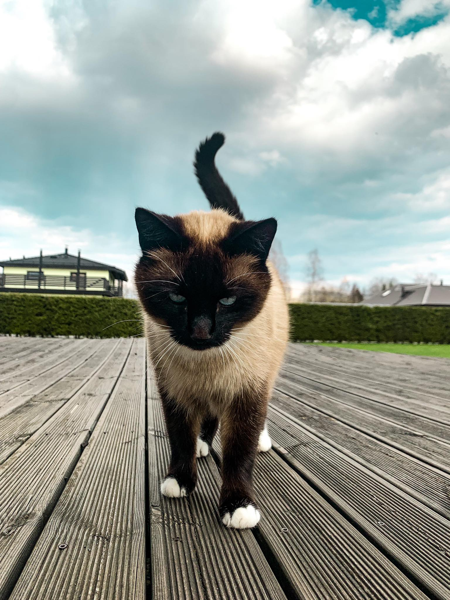

 Ma olen 100% kindel et minu kass nimega Sipsik on kõige armsam kiisu maailmas. Sa võid mulle saata ükskõik millisest kassist pildi ja ma võin garanteerida, et Sipsik on temast nunnum. Sipsik on nunnu nii välimuse kui ka iseloomu tõttu. Kui ma Sipsiku ööseks tuppa lasen, siis ma panen üldiselt ukse kinni, sest mulle ei meeldi magada avatud uksega. Kui ta tahab välja minna mu toast, siis ta hakkab ringi jooksma iga asja otsa hüppama. Kui ma teen ukse lahti, ta läheb välja, aga kui ma ukse uuesti kinni panen siis ta hakkab mu ukse taga karjuma ja tahab tuppa tagasi saada. Sipsik näeb küll välja nagu Siiami kass, aga tal ei ole tegelikult tõugu. Millegi pärast ei meeldi Sipsikule mu voodis magada, ta üldiselt magab vaibal, aknalaual või toolil. Ta võib olla natuke aega minu voodis, aga natukese aja pärast ta läheb ikkagi ära. Sipsik ei kannata üldse eriti väikseid lapsi. Iga kord kui keegi mu väikestest sugulastest külla tuleb läheb Sipsik kohe õue. Sipsikule meeldib kõige rohkem kui teda sügada lõua alt. Vahest kui teda pai- tada kõhu peale sirutab ta ennast välja ja tahab, et teda kõhu peale sügatakse. Aga vahest kui ma teda kõhu peale paitan arvab Sipsik, et ma tahan temaga mängida ja ta hakkab mind küünistama.